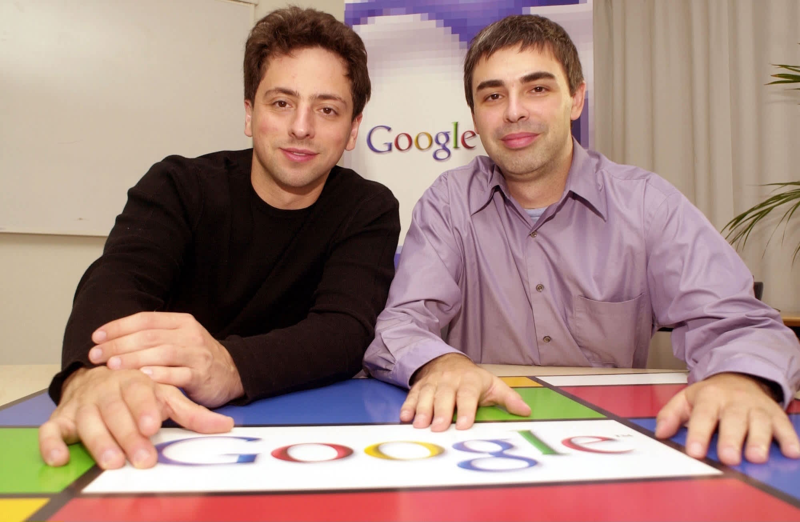

Background
Sergey Brin

- He was born March 26, 1973, in Lansing, Michigan, U.S.
- He earned a Bachelor of Science degree in engineering from the University of Michigan.
- He’s widely known as the co-inventor of Google and the PageRank algorithm.
-
He served as Google’s CEO from 1998 to 2001 and 2011 to 2015, as well as the CEO of Alphabet Inc. from 2015 to 2019.
Larry Page
- He was born March 26, 1973, in Lansing, Michigan, U.S.
- He earned a Bachelor of Science degree in engineering from the University of Michigan.
- He’s widely known as the co-inventor of Google and the PageRank algorithm.
- He served as Google’s CEO from 1998 to 2001 and 2011 to 2015, as well as the CEO of Alphabet Inc. from 2015 to 2019.
Early Life